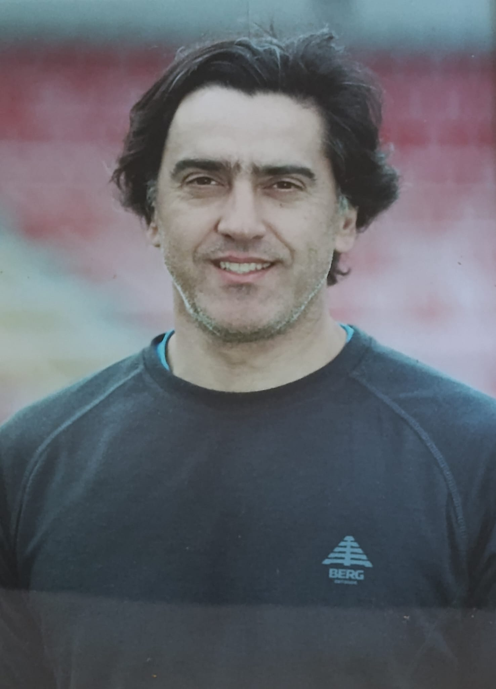
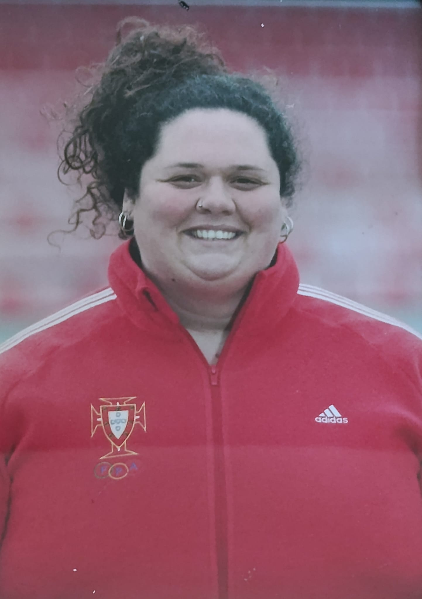
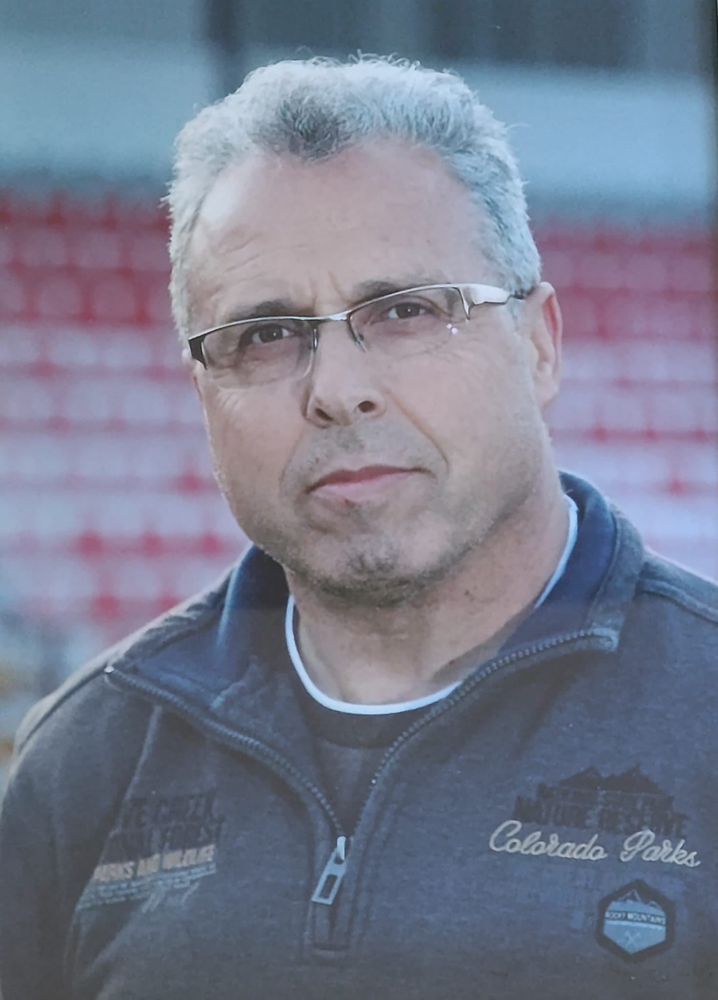
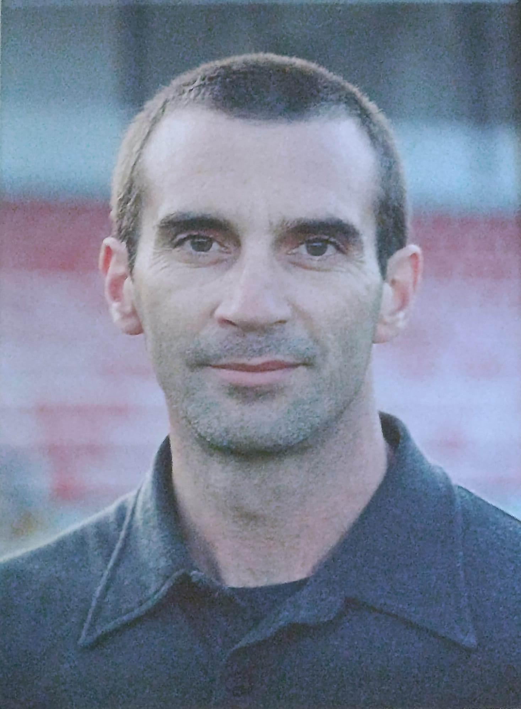

Quem Somos
O Clube de Atletismo de Marinha Grande (CAMG) é uma instituição de referência no atletismo português, fundada em 29 de setembro de 1995.
📖 A Nossa História
Antes de 1995, o atletismo da Marinha Grande era apenas uma secção do Atlético Clube Marinhense. Reconhecendo o potencial e a importância da modalidade, um grupo de apaixonados pelo atletismo viu a oportunidade de criar um clube dedicado exclusivamente a esta disciplina, com o apoio da Câmara Municipal. Esta decisão revelou-se estratégica, permitindo que a modalidade tivesse objetivos mais ambiciosos e uma gestão mais viável.
🏃 Realidade Atual
Presentemente, o CAMG conta com mais de 100 atletas filiados e aproximadamente 300 sócios que contribuem com uma quota anual. A nossa sede localiza-se no Estádio Municipal de Marinha Grande, onde desenvolvemos um trabalho contínuo de qualidade e excelência. No último ano, registámos 126 atletas ativos em várias especialidades.
🌟 Liderança e Compromisso
Sob a liderança da nossa Presidente, Ana Paula André, o CAMG tem desenvolvido um trabalho notável e reconhecido a nível nacional e internacional. Formamos atletas de qualidade que se destacam em competições de topo. O nosso compromisso é oferecer as melhores condições de treino, desenvolvimento desportivo e orientação técnica especializada.
30+
Anos de História
126
Atletas Ativos
300+
Sócios
Missão & Visão
Missão
Promover o desenvolvimento integral de atletas através de treino de qualidade, orientação técnica especializada e oportunidades de competição a nível nacional e internacional. Somos comprometidos em fomentar uma comunidade de desportistas que valorizam a excelência, a ética desportiva e o espírito de equipa.
Visão
Ser reconhecido como um dos principais clubes de atletismo em Portugal, capaz de formar atletas de elite e contribuir para o desenvolvimento contínuo do atletismo nacional. Aspiramos a ser um centro de referência de treino e inovação desportiva.
Nossos Valores
Excelência
Perseguir sempre o melhor desempenho em cada treino e competição
Disciplina
Dedicação constante e rigor no treino para alcançar objetivos
Paixão
Amor genuíno pelo atletismo e pelo desporto em geral
Solidariedade
Apoio mútuo entre atletas, treinadores e staff do clube
Integridade
Ética e honestidade em todas as ações e decisões
Inclusão
Acolher atletas de todas as origens, idades e níveis de experiência
Infraestruturas e Recursos
Instalações de qualidade para o desenvolvimento completo dos nossos atletas
Estádio Municipal
Pista de 400m com todos os equipamentos para treino de velocidade, técnica e provas de fundo
Sala de Musculação
Equipamento moderno para treino de força, preparação física e desenvolvimento muscular
Análise de Desempenho
Monitorização científica do progresso dos atletas com ferramentas de controlo modernas
Equipa de Treinadores
Profissionais especializados e dedicados ao desenvolvimento dos nossos atletas em todas as modalidades
Especialistas
Anos Experiência
Dedicação

Beatriz Azevedo
Treinadora Sub-10, Sub-12
20+ anos de experiência. Especialista em sprints, provas de velocidade e treino técnico de base.

Ana Ferreira
Treinadora Sub-14
Especialista em provas de longa distância, resistência aeróbica e preparação de atletas de elite.

João Pereira
Treinador Sub-16
Técnico especializado em saltos em altura, comprimento e triplo salto com metodologia avançada.

Miguel Lucas
Treinador de Saltos e Velocidade
Preparador de força e especialista em lançamentos de peso, disco, dardo e martelo.

Fernando Alves
Treinador de Lançamentos
Preparador de força e especialista em lançamentos de peso, disco, dardo e martelo.

Cristiana Oliveira
Treinadora de Lançamentos
Preparadora de força e especialista em lançamentos de peso, disco, dardo e martelo.

Virgilio Bastos
Treinador de Marcha
Preparador de força e especialista em marcha atlética.

António Graça
Treinador de Meio-fundo
Preparador de força e especialista em meio-fundo e fundo.

George Silva
Treinador de Salto com Vara
Preparador de força e especialista em salto com vara.
Por Que Escolher o CAMG?
Treinadores Especializados
Equipa técnica com experiência internacional e certificações de excelência em cada especialidade
Programas Personalizados
Planos de treino ajustados aos objetivos, idade e necessidades de cada atleta
Competições Regulares
Oportunidades frequentes de competição em eventos regionais, nacionais e internacionais
Comunidade Forte
Ambiente acolhedor, motivador e inclusivo para o desenvolvimento pessoal e desportivo
Resultados Comprovados
Histórico comprovado de atletas de elite, campeões e médicos em diversas modalidades
Inovação Contínua
Adoção de metodologias modernas, tecnologias de treino e ferramentas científicas avançadas